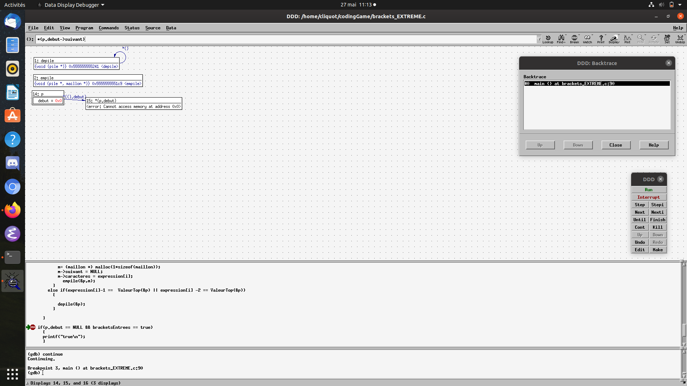

COMPTE RENDU
cliquot
Created: 2020-05-27 mer. 18:10
Table of Contents
1 Fonction utilisé
1.1 ObtenirOUT
#include <stdio.h>
#include <stdlib.h>
#include <string.h>
int main ()
{
FILE* f;
char chaine[100];
int num = data;
f = fopen(file_name ,"r");
for(int i = 0; i < num ; i++)
{
do
{
fgets(chaine,100,f);
} while(strcmp(chaine,"NEXT\n"));
}
fgets(chaine,100,f);
do
{
printf("%s",chaine);
fgets(chaine,100,f);
}while(strcmp(chaine,"NEXT\n"));
return 0;
}
1.2 ObtenirIN
#include <stdio.h>
#include <stdlib.h>
#include <string.h>
int main ()
{
FILE* f;
char chaine[100];
int num = data;
f = fopen(file_name ,"r");
for(int i = 0; i < num ; i++)
{
do
{
fgets(chaine,100,f);
} while(strcmp(chaine,"NEXT\n"));
}
fgets(chaine,100,f);
do
{
printf("%s",chaine);
fgets(chaine,100,f);
}while(strcmp(chaine,"NEXT\n"));
return 0;
}
1.3 ComparaisonString
#include<stdio.h>
#include<string.h>
#include<stdlib.h>
int main()
{
char tab[50];
strcpy(tab,!strcmp(v1,v2) ? "Même résultats" : "Résultats différents");
printf("%s",tab);
}
1.4 ComparaisonInt
#include<stdio.h>
#include<string.h>
#include<stdlib.h>
int main()
{
char tab[50];
strcpy(tab,v1 == v2 ? "Même résultats" : "Résultats différents" );
printf("%s",tab);
}
2 Brackets
2.1 Introduction
Les brackets est un nom regroupant les parenthéses (), les
crochets [] et les accolades {}. Le but de ce Coding Game est de
savoir si nos brackets sont toujours appairés et imbriqué ( un [ avec un ] un {
avec un } etc… )
Exemple :
| Expression | Résultat |
|---|---|
| {()}[]() | Correct |
| {5R}{}(()) | Correct |
| {}[(]] | Incorrect |
| {([)]} | Incorrect |
Lorsque notre résultat est correct, l'algorithme devra renvoyé true et false lorsque le résultat est incorrect
2.2 Principe de résolution
J'ai opté pour résoudre ce problème l'utilisation de pile, même si il peut exister des solutions beaucoup plus optimisée (Code de Alain Delpuch). Cependant c'était un bonne entraînement d'intégrer ce type en C.
2.2.1 Création des piles
Pour créer une structure pile, il nous faut d'abord créer la structure liste, et donc créer la structure maillon. Cependant comme je n'avais besoin nullement d'un avantage des listes, cette structure est directement intégré dans la structure pile
Des maillons simples suffisent, c'est à dire avec un champ data (ici data sera de type char) et un autre champ suivant (qui sera un pointeur vers le maillon suivant).
La structure liste ne devrait normalement contenir qu'un simple champ début (correspondant à un pointeur vers le premier maillon de la liste\). Cependant j'ai sauté l'étape des listes pour créer directement les piles (Vu que les piles ne contiennent qu'une liste, cela revient à contenir un maillon début\)
Ensuite il faut créer 3 fonctions utilisant les piles qui seront nécessaires pour résoudre ce coding Game : empile, depile et valeurTop .Ces fonctions vont respectivement ajouter un char au dessus de la pile , enlever un char au dessus de la pile et nous donner la valeur du dessus de la pile.
2.2.2 Résolution
Maintenant qu'on à des piles à notre disposition, on peut les utiliser pour résoudre ce problème. Pour cela on va regarder caractères par caractères et dès qu'on va croiser un {,~(~ ou [ on va ajouter ce caractère dans notre pile p crée précédemment et ceux grâce à empile. Si on croise à l'inverse comme caractère ],~)~ ou }, on va regarder grâce à valeurTop si notre char dans la pile p corresponds au même brackets (mais cette fois-ci le brackets ouvrant).
Si oui on depile p, sinon on ne fait rien. Ainsi si toutes nos brackets forment une expression correcte, la pile sera forcément vide. Il suffit donc de ragarder à la fin de l'expression si la pile p est vide.Si elle l'est alors l'expression est correcte est on peu renvoyé true, sinon on renvoie false.
Cependant un cas particulier peut poser problème, si l n'y a aucun { [ ou ( , la pile ne se remplira jamais (vu qu'on appellera jamais empile). Il faut donc s'assurer qu'il y en a au moins un.
#include <stdlib.h>
#include <stdio.h>
#include <string.h>
#include <stdbool.h>
struct maillon
{
struct maillon* suivant;
char caracteres;
};
typedef struct maillon maillon;
struct pile
{
maillon* debut;
};
typedef struct pile pile;
void empile(pile* p, maillon* c)
{
if(p->debut == NULL)
{
p->debut = c;
c->suivant = NULL;
}
else
{
maillon* premier = p->debut;
p->debut = c;
c->suivant = premier;
}
maillon* maillonEncours = p->debut;
while (maillonEncours != NULL)
{
maillonEncours = maillonEncours->suivant;
}
}
void depile(pile* p)
{
if(p->debut != NULL)
{
p->debut = p->debut->suivant;
}
}
char ValeurTop(pile* p)
{
if(p->debut !=NULL)
{
return p->debut->caracteres;
}
return '0';
}
int main()
{
bool bracketsEntrees = false;
pile p = {NULL};
char expression[2049];
scanf("%s", expression);
int taille = strlen(expression);
for(int i = 0; i<taille;i++)
{
if (expression[i] == '{' || expression[i] == '[' || expression[i] == '(')
{
bracketsEntrees = true;
// maillon m = {NULL,expression[i]};
maillon * m;
m= (maillon *) malloc(1*sizeof(maillon));
m->suivant = NULL;
m->caracteres = expression[i];
empile(&p,m);
}
else if(expression[i]-1 == ValeurTop(&p) || expression[i] -2 == ValeurTop(&p))
{
depile(&p);
}
}
if(p.debut == NULL && bracketsEntrees == true)
{
printf("true\n");
}
else
{
printf("false\n");
}
return 0;
}
2.3 Vérification de mon code
2.3.1 Entrée du test à réaliser
2.3.2 Mon résultat pour ce test
../brackets_EXTREME < file-IN.txt
2.3.3 Résultat attendue pour ce test
true
2.3.4 Comparaison des résultats
Même résultats
2.4 Au niveau de la mémoire
Les images suivantes ont était récupérées à l'aide de ddd en lançant le programme brackets avec en entré {[()]} (correct) ou {[(]} (incorrect) . (1, 2, 3, 4).
- 1 représente la pile p au tout début,
- 2 représente la pile p lorsque tous les empiles sont finis
- 3 représente la pile p avant le print (si brackets correct)
- 4 représente la pile p avant le print (si brackets incorrect)
Figure 1: répresentation de la pile p au début (avant les empiles)
Figure 2: répresentation de la pile p après les empiles (avant les depiles)

Figure 3: répresentation de la pile p avant le print (si brackets correct)
Figure 4: répresentation de la pile p avant le print (si brackets incorrect)
2.5 Solution
Solution apportée par Alain Delpuch :
#include <stdio.h>
const char *e;
void
parse(char until) {
while(1) {
char c = *e++;
if (c == until) return;
switch(c) {
case '(' : parse(')'); break;
case '[' : parse(']'); break;
case '{' : parse('}'); break;
case 0 :
case ')' :
case ']' :
case '}' : printf("false\n"); exit(1);
}
}
}
main() {
char expression[2049];
scanf("%s", expression);
e = expression ;
parse(0);
printf("true\n");
}
Cette solution bien que assez compacte est dur à expliquer.On commence par la fonction main qui demande à l'utilisateur l'expression et le stock dans une autre variable globale e. Ensuite il appelle une fonction parse avec 0 comme argument (On verra à la fin pourquoi 0).
Dans la fonction parse, on va regarder en boucle le prochain caractères dans l'expression(même si on est dans un parse différent,par exemple si j'appelle mon parse une première fois et que j'en suis à regarder le 5 eme caractères de l'expression, si je rappelle une seconde fois mon parse, je vais directement regarder la 6 eme valeur, et non la première). On va ensuite avoir 3 cas majeurs. Le cas où c est égale à { ( ou [ et c différent de until (le paramètre du parse actuelle), c = ] ) ou } et c != until et enfin c == until.
- Dans le premier cas on va appeler récursivement
parseet cette fois ci avec comme argument le brackets paire à celle-ci. Comme ça si le prochain brackets que l'on voit et aussi le brackets paire, on va avoir c \=\= until (donc l'expression respecte bien les conditions pour le moment) ,on va se retrouver dans le 3 eme cas et leparseappeler va donc arrêter de tourner. Mais si c != until On va se retrouver dans le 2 eme cas et le programme va retourner false. - Dans ce cas le programme retournera quoi qu'il arrive false puisque les conditions ne sont pas respectées, en effet si on arrive à ce cas c'est soit que le brackets ouvert n'est pas le même que le brackets fermé (c'est à dire qu'on provient du cas 1), soit le
parseactuelle est celui appelé dans le main, et dans ce cas notre expression commence par un brackets fermé, et il est donc impossible que les conditions soit respectés.
- Si on est dans ce cas, c'est alors que comme indiqué dans le cas 1, on à une bonne correspondance de pair.On va donc stopper le parse actuelle.
Si toutes nos brackets sont correctes (et donc qu'on à seulement suivis le cas 1 et 3). On va se revenir à notre parse(0). Cependant on ne vas pas tomber dans le cas 2 puisque étant arriver à la fin du tableau, la prochaine case aura comme contenu 0 (puisque c'est une variable générale, du moins je l'espère car sinon j'ai rien compris). Ainsi on va bien finir sur un cas 3. On va donc sortir du parse(0) et continuer le main, ou on va afficher true, Ce qui correspond bien au cas ou tous nos brackets sont correctes.
La boucle while(1) permet de continuer à avancer dans l'expression si notre caractère actuelle n'est pas l'un des 7 cas présent (exemple 'R' ou '5').
(Alain Delpuch je t'aime bien sauf lorsque tu fait de tel algorithme).
3 Lumen
3.1 Introduction
Imaginons une salle carrée de taille N avec des bougies éclairant chacune un carrée autour d'elle de longueur L. On cherche à savoir le nombre de cases sans lumière, c'est à dire celle n'étant pas dans le rayon d'action des bougies Notre algorithme doit renvoyer le nombre de cases non éclairés.
Exemples:
Entrée: N=6 L=2
| X | X | X | X | X | X |
| X | X | X | X | X | X |
| X | C | X | X | X | X |
| X | X | X | X | X | X |
| X | X | X | C | X | X |
| X | X | X | X | X | X |
Sortie:
19
3.2 Principe de résolution
On stock le schéma fournit par l'utilisateur dans un tableau 2D *tabPiece *.
Ensuite on regarde case par case dans tabPiece à la recherche d'un 'C'. Si notre case actuelle est un 'C', on regarde les cases dans un rayon L autour de la case actuelle qu'on va remplir avec u 'L' à la place d'un 'X'. Cependant il faut s'assurer de 2 choses pendant cette étape:
- Il faut s'assurer qu'on ne remplace pas un 'C' par un 'L', car on peut supprimer la prochaine bougie et donc rendre notre sortie fausse
- Il faut aussi s'assurer qu'on ne dépasse pas les bordures de notre tableau (Par exemple si on à une bougie dans le coin supérieur gauche de notre schéma et que l'intensité de la lumiére est de 2. On ne pourra pas mettre 'L' au case avant notre bougie).
Il suffira ensuite de refaire un tour du tableau est de compter le nombre de 'X' restant, puis de l'afficher.
#include <stdlib.h>
#include <stdio.h>
#include <string.h>
#include <stdbool.h>
// Est ce que les heures sup sont payés en linux ?
int main()
{
int N;
scanf("%d", &N);
int L;
scanf("%d", &L);
L--;
char ** tabPiece = (char**) malloc(N*sizeof(char*));
for(int i = 0; i<N;i++)
{
tabPiece[i] = (char*) malloc(((N+1)*2)*sizeof(char));
fgets(tabPiece[i], N*2+1, stdin);
}
for (int i = 0;i<N;i++)
{
for (int j = 0;j < N*2;j+=2)
{
if (tabPiece[i][j] == 'C')
{
int l;
int L2;
int limite;
int Limite;
l = i-L >= 0 ? i-L : 0;
L2 = j-L*2 >= 0 ? j-L*2 : 0;
limite = i+L < N ? i+L : N-1;
Limite = j+L*2 < N*2 ? j+L*2 : N*2-1;
for(int u = l;u <= limite;u++)
{
for (int v = L2; v <=Limite;v+=2)
{
if(tabPiece[u][v] != 'C')
{
tabPiece[u][v] = 'L';
}
}
}
}
}
}
int nbr = 0;
for (int i =0; i < N;i++)
{
//printf(">>>%s\n",tabPiece[i]);
for (int j = 0; j < N*2;j++)
{
if (tabPiece[i][j] == 'X')
{
nbr++;
}
}
}
printf("%d\n",nbr);
return 0;
}
3.3 Vérification de mon code
3.3.1 Entrée du test à réaliser
3.3.2 Mon résultat pour ce test
../lumen < file-IN.txt
90
3.3.3 Résultat attendue pour ce test
90
3.3.4 Comparaison des résultats
Même résultats
3.4 Au niveau de la mémoire
Les images suivantes ont était récupérées à l'aide de ddd en lançant le programme lumen avec en entré :
| 5 | ||||
|---|---|---|---|---|
| 2 | ||||
| X | X | X | X | X |
| X | C | X | X | X |
| X | X | X | X | X |
| X | X | X | X | C |
| X | X | X | X | X |
- 5 représente le tableau 2D tabPiece après la saisie de l'utilisateur
- 6 représente le tableau 2D tabPiece après modification par l'algorithme
- 7 représente le tableau 2D tabPiece à la fin de l'algorithme

Figure 5: représentation du tableau 2D tabPiece après la saisie de l'utilisateur

Figure 6: représentation du tableau 2D tabPiece après modification par le programme
Figure 7: représentation de la mémoire à la fin de l'algorithme
3.5 Solution
Solution de Alain-Delpuch
// ------------------------------------------------------------------
// Lumen
// ------------------------------------------------------------------
#include <stdio.h>
// ------------------------------------------------------------------
int map[25][25];
int N,L;
// ------------------------------------------------------------------
void
F(unsigned int i, unsigned int j, int l){
if ( i >= N || j >= N || l < map[i][j] ) return;
map[i][j] = l--;
F( i-1 , j-1 , l) ; F( i-1 , j , l) ; F( i-1 , j+1 , l) ;
F( i , j-1 , l) ; ; F( i , j+1 , l) ;
F( i+1 , j-1 , l) ; F( i+1 , j , l) ; F( i+1 , j+1 , l) ;
}
// ------------------------------------------------------------------
main() {
scanf("%d %d\n", &N, &L);
for (int i = 0; i < N; i++) {
for (int j = 0; j < N; j++) {
char buf[2];
scanf("%s",buf);
F( i , j , *buf=='X' ? 0 : L);
}
}
int result = 0;
for (int i = 0; i < N; i++) {
for (int j = 0; j < N; j++) {
result += map[i][j] == 0;
}
}
printf("%d",result);
}
Dans cette algorithme, on prends chaque caractère un par un, puis en fonction de si cette case contient 'C' ou 'X', on appelle la fonction F avec comme argument le numéro de ligne et de colonne de la case, puis L ou 0 (si la case contient 'C' ou 'X' )
La fonction F va appliquer l (son 3 eme argument) à la case actelle puis elle va réappliquer la fonction F (avec l– cette fois-ci) pour toutes les cases autour et ceux jusqu'à ce que l soit strictement inférieur à la valeur dans la case actuelle (avec toutes les cases initialisé à 0) ou qu'on dépasse la limite du tableau. Cela permet par exemple si L = 3 de remplir la case au centre avec 2, puis celle en périphérie par 1(tout en faisant attention de ne pas remplacer le 2 au centre).
On applique cette méthode pour toutes les case du schéma. Il suffit donc ensuite de calculer le nombre de fois où une case est égale à 0 dans notre tableau 2D map et de l'afficher.
4 Autre fichier
4.0.1 Différentes version de ce document
4.0.2 Mes fichiers IN et OUT
./brackets_IN.txt ./brackets_OUT.txt ./lumen_IN.txt ./lumen_OUT.txt